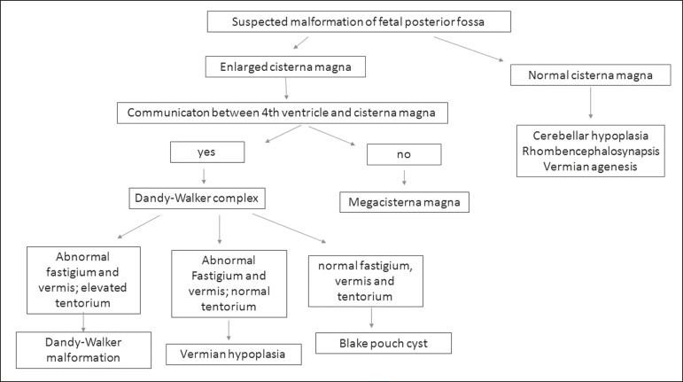
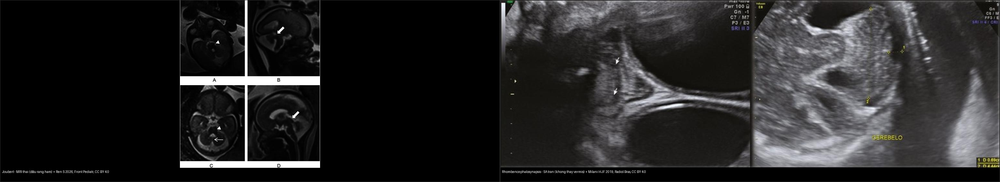
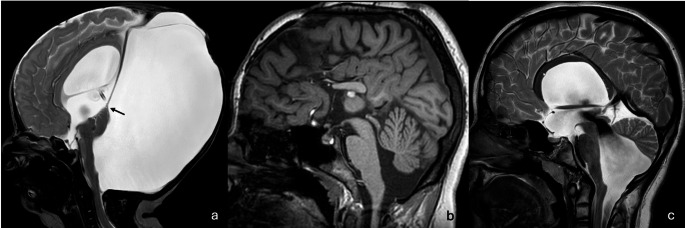
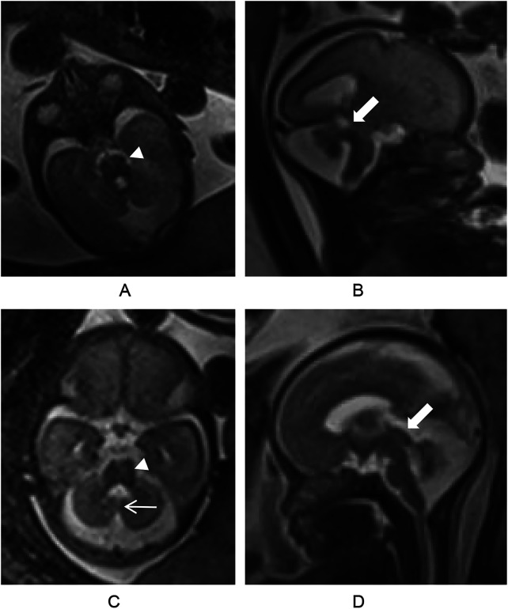
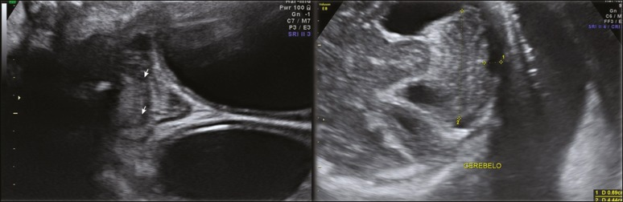
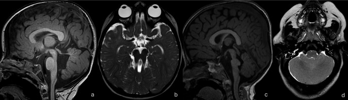

657 — Dị tật hố sau: Joubert (dấu răng hàm) & rhombencephalosynapsis / Posterior fossa malformations
Tags: pattern:di-dang-ho-sau pattern:rang-ham pattern:thieu-san-vermis vung:tieu-nao vung:nao-nhi protocol:MRI-nao-nhi
Mức chắc chắn (certainty): tổng hợp y văn (literature synthesis) — tổng hợp từ bài tổng quan hình ảnh–di truyền hố sau + ca thai CC BY, chưa phải ca nguyên văn đơn lẻ.
1. Tổng quan bệnh học – cơ chế hình ảnh
1.1 Phôi thai học — vì sao "răng hàm" lại là dấu hiệu chốt
- Não sau (rhombencephalon) chia thành thể não giữa (metencephalon = cầu não + tiểu não) và thể não sau (myelencephalon = hành não). Tiểu não/hạch thần kinh phát sinh từ mào tiểu não (rhombic lip), dưới sự điều khiển của vùng tổ chức đồi-thể não giữa (midbrain-hindbrain junction / isthmic organizer), vào khoảng tuần 5–7 thai kỳ. Sự cố trong cửa sổ này sinh ra nhóm dị tật "đồi–hố sau" (midbrain–hindbrain malformations).
- Dấu răng hàm (molar tooth sign — MTS) là hệ quả hình ảnh của 3 khiếm khuyết phối hợp, đọc trên lát cắt trục (axial) qua ngã ba đồi–cầu (pontomesencephalic junction):
- Cuống tiểu não trên (superior cerebellar peduncle — SCP) dày, dài và nằm NGANG (bình thường SCP chạy dọc, hội tụ lên trên theo hình chữ V). TẠI SAO: trong bệnh lý tiểu não–ciliopathy, các sợi SCP không bắt chéo được như bình thường nên đổi hướng thành nằm ngang và dày lên trên T2 → tạo "hai chân răng".
- Hố liên cuống (interpeduncular fossa) sâu → tạo "khe giữa răng".
- Thiểu sản/loạn sản sâu tiểu não (vermian hypoplasia/dysplasia) → tạo "thân răng". Ba yếu tố này ghép lại cho hình chiếc răng hàm (molar tooth) trên mặt cắt trục.
- Joubert syndrome (JS) và bệnh cảnh liên quan (JSRD) là bệnh lông mao (ciliopathy) di truyền lặn nhiễm sắc thể thường, do khiếm khuyết lông mao sơ cấp / vận chuyển trong lông mao (intraflagellar transport). Đây là nhóm rối loạn đa cơ quan (não–mắt–thận–gan–xương). Tần suất ước tính ~1/80.000–1/100.000 (Orphanet). Hơn 40 gen đã biết; thường gặp AHI1, CEP290, CC2D2A, TMEM67, NPHP1, RPGRIP1L.
- Rhombencephalosynapsis (RES) là hợp nhất hoàn toàn (hiếm khi từng phần) hai bán cầu tiểu não + nhân răng (dentate nuclei) + cuống tiểu não trên, kèm bất sản sâu tiểu não → hình ảnh "tiểu não hợp nhất" ở đường giữa. TẠI SAO: hỏng bước tạo rãnh giữa/đường giữa tiểu não. Thường lẻ tẻ (sporadic), đa số chẩn đoán ở trẻ nhỏ; có thể kèm giãn não thất (hydrocephalus) và triệu chứng tiểu não muộn.
1.2 Ngưỡng định lượng & mốc đọc chuẩn
- MTS đọc trên lát axial T2 (hoặc bất kỳ chuỗi) tại ngã ba đồi–cầu — mô tả định tính (SCP dày/ngang + hố liên cuống sâu + thiểu sản sâu não). Không có ngưỡng mm chính thức; đối chiếu cấu trúc giải phẫu.
- Sâu tiểu não (vermis): ở thai, sâu khép kín đường giữa khoảng tuần 18 — trước mốc này không được kết luận thiểu sản sâu trên siêu âm/MRI thai (nguy cơ dương tính giả rất cao).
- Joubert: liệt vận nhãn (oculomotor apraxia) gặp ở ~80% (dấu lâm sàng gợi ý mạnh); loạn dưỡng võng mạc (retinal dystrophy) ở nhóm JS type B ~20–30% → cần soi đáy mắt + ERG.
- Rhombencephalosynapsis: chẩn đoán dựa vào folia tiểu não liên tục qua đường giữa, không thấy sâu tiểu não (siêu âm thai coronal hoặc MRI axial). Đường kính ngang tiểu não có thể bình thường hoặc dưới bách phân vị 10 (10th percentile) và tiểu não hình tam giác trên lát trục.
2. Mẫu hình + chẩn đoán phân biệt theo vị trí (gamut)
Hai câu hỏi định hướng mọi bất thường hố sau (theo lưu đồ Milani 2019): (1) Bể lớn sau (cisterna magna) có to không? (2) Có thông giữa não thất IV và bể lớn sau không?
- Bể lớn sau to + CÓ thông IV ↔ bể lớn sau → phức hợp Dandy-Walker: dị tật Dandy-Walker (sâu loạn sản + xoay lên trên + lều tiểu não nâng cao / đảo dấu torcula–lambda), thiểu sản sâu tiểu não (vermian hypoplasia), nang túi Blake (Blake pouch cyst).
- Bể lớn sau to + KHÔNG thông → bể lớn sau khổng lồ (megacisterna magna) — thường là biến thể/khối nang ngoài tiểu não.
- Bể lớn sau bình thường → thiểu sản tiểu não (cerebellar hypoplasia), rhombencephalosynapsis, bất sản sâu tiểu não (vermian agenesis).
- Bất thường ngã ba đồi–cầu (midbrain–hindbrain junction) → Joubert syndrome (MTS); các bắt chước (mimic): hội chứng Poretti-Boltshauser (đột biến LAMA1) — MTS giống răng hàm + nang vỏ tiểu não + bất thường mắt; loạn sản trần tegmentum (tegmental cap dysplasia) — gồ tiết tegmentum cầu; "răng hàm mini" (mini molar tooth) trong loạn dưỡng chất trắng giảm myelin do POLR3B.
- Nhóm kèm biểu hiện mắt–cột sống: bất thường tiểu não/hố sau có thể đi kèm bất thường mắt (loạn dưỡng võng mạc, coloboma, dị tật nhãn cầu như trong Poretti-Boltshauser) và bất thường đốt sống/cột sống. Cần nhớ các hội chứng kèm: Gomez-López-Hernández (hói đỉnh đầu + mất cảm giác thần kinh sinh ba + bất thường sọ mặt) và phổ VACTERL (dị tật Đốt sống Vertebral, hậu môn Anal, tim Cardiac, khí–thực quản Tracheo-Esophageal, thận Renal, chi Limb) — cả hai đều có thể kèm rhombencephalosynapsis. → Khi thấy bất thường hố sau, phải quét mắt (đáy mắt) và cột sống.

Lưu đồ phân biệt bất thường hố sau: bể lớn sau to + có/không thông não thất IV → phức hợp Dandy-Walker / nang túi Blake / bể lớn sau khổng lồ; bể lớn sau bình thường → thiểu sản tiểu não, rhombencephalosynapsis, bất sản sâu tiểu não. Nguồn: Milani HJF et al., Radiol Bras 2019, CC BY 4.0.3. Bảng so sánh phân biệt (ma trận đối chiếu)
| Thực thể (entity) | Hình ảnh điển hình | Chốt vào (rule-in) | Chốt loại (rule-out) | Gợi ý xác nhận |
|---|---|---|---|---|
| Joubert (MTS) | Axial T2 ngã ba đồi–cầu: SCP dày, nằm ngang + hố liên cuống sâu + thiểu sản sâu não; sagittal: sâu não nhỏ, não thất IV giãn | Hình "răng hàm" trên axial + liệt vận nhãn/giảm trương lực + thở bất thường | SCP bình thường (hướng dọc) → loại MTS | MRI axial T2 lát mỏng qua ngã ba; soi đáy mắt/ERG (loạn dưỡng võng mạc ~20–30%), siêu âm thận, men gan |
| Rhombencephalosynapsis | Folia liên tục qua đường giữa, KHÔNG có sâu tiểu não; hai nhân răng hợp nhất; tiểu não hình tam giác trên trục | Folia bắc cầu đường giữa + mất sâu não ở MỌI lát | Có sâu não/một khe giữa rõ → không phải RES | MRI axial T2 + coronal; tìm Gomez-López-Hernández (hói đỉnh, mất cảm giác mặt), dị tật đốt sống (VACTERL) |
| Dandy-Walker (DWM) | Sâu não thiểu sản + xoay lên trên, não thất IV dạng nang thông với bể lớn sau, hố sau to + đảo torcula–lambda | Não thất IV dạng nang + thông bể lớn sau + lều nâng cao | Nếu sâu não bình thường, không nang → loại DWM | MRI sagittal T1/T2; phân biệt nang túi Blake |
| Thiểu sản sâu (vermian hypoplasia) | Sâu nhỏ nhưng lều tiểu não BÌNH THƯỜNG, không nang lớn; fastigium bất thường | Sâu nhỏ + lều bình thường | Sâu bình thường/folia liên tục → loại | Trước 18 tuần không kết luận (sâu chưa khép) |
| Nang túi Blake / bể lớn sau khổng lồ | Nang sau tiểu não; fastigium–sâu–lều bình thường; MCM: bể lớn sau to nhưng sâu bình thường | Sâu não bình thường + não thất IV không giãn lớn | Sâu loạn sản + lều nâng → DWM | So tuần tuổi; theo dõi, phần lớn tiên lượng tốt |
| Poretti-Boltshauser (LAMA1) | Hố sau bất thường + MTS GIỐNG + loạn sản tiểu não có nang dưới vỏ + bất thường mắt (nhãn cầu/thị giác) | MTS "giả" + nang vỏ tiểu não + bất thường mắt | MTS kinh điển không nang vỏ + không bất thường mắt → Joubert | Miễn dịch/gen LAMA1; soi đáy mắt |
| Tegmental cap dysplasia | Gồ "mũ" ở trần tegmentum cầu, thân não loạn sản, tiểu não giảm sản/loạn sản | Gồ trần tegmentum + thân não loạn sản | MTS chân răng ngang nhưng không gồ trần → Joubert | MRI thân não lát mỏng |
| Thiểu sản tiểu não (cerebellar hypoplasia) | Tiểu não nhỏ, đường kính ngang < BPV10, bể lớn sau "giả to"; có thể kèm pontine hypoplasia | ĐK ngang tiểu não < BPV10 + cấu trúc vẫn còn | Tiểu não bình thường về kích thước → loại | Đo sinh trắc qua MRI thai nhi/sau sinh |

Trái: Joubert — MRI thai (2 ô trên: axial HASTE dấu răng hàm — đầu mũi tên; ô dưới: sagittal hố sau rộng, sâu loạn sản, cuống tiểu não trên dày dài — mũi tên). Phải: rhombencephalosynapsis — siêu âm thai: folia liên tục qua đường giữa, không thấy sâu tiểu não (đầu mũi tên); tiểu não hình tam giác. Nguồn: Ren S 2026, Front Pediatr (PMC13041775); Milani HJF 2019, Radiol Bras (PMC7007051) — CC BY 4.0. Ảnh ghép letterbox.Joubert vs rhombencephalosynapsis — nhìn gì trước?
- Joubert: hình thái thân não bất thường (răng hàm) nhưng đường giữa tiểu não vẫn có (sâu não thiểu sản nhưng không bị hợp nhất). Bể lớn sau bình thường, không giãn não thất sớm.
- Rhombencephalosynapsis: thân não thường bình thường, nhưng đường giữa tiểu não biến mất (folia bắc cầu). Hay kèm giãn não thất.
- Neo chốt: bất thường thân não ngã ba → Joubert; bất thường đường giữa tiểu não → rhombencephalosynapsis.
4. Protocol chụp + hệ phân độ / lưu đồ
- MRI sọ não (không – có cản quang): bắt buộc chuỗi axial T2 lát mỏng (≤ 2–3 mm) qua ngã ba đồi–cầu để phát hiện MTS; T1/T2 sagittal đánh giá sâu tiểu não, não thất IV, lều tiểu não; FLAIR (chất trắng), DWI nếu nghi nhiễm trùng/chuyển hóa. Nếu liên quan cột sống: MRI cột sống toàn bộ.
- MR Neuroimaging "ciné": với nghi ngờ ciliopathy, thêm MRCP/ siêu âm thận–gan (nephronophthisis, xơ gan) và soi đáy mắt + ERG.
- Siêu âm thai (cửa sổ hố sau), MRI thai (HASTE/SSFSE): đọc hố sau 3 mặt cắt (transcerebellar axial, coronal, sagittal). Không kết luận thiểu sản sâu trước 18 tuần.
- Không có RADS riêng cho nhóm này → dùng lưu đồ quyết định (Milani 2019) + hội chẩn di truyền (JSRD nhiều gen, xét nghiệm gen lông mao/array).
flowchart TD
A[Bất thường hố sau trên MRI/SA] --> B{Bể lớn sau có to?}
B -->|Không| C{Đường giữa tiểu não còn?}
C -->|Có, sâu thiểu sản| D{Joubert: thân não răng hàm?}
D -->|Có| E[Joubert - MTS]
D -->|Không| F[Thiểu sản sâu / thiểu sản tiểu não]
C -->|Không - folia bắc cầu| G[Rhombencephalosynapsis]
B -->|Có| H{Thông não thất IV - bể lớn sau?}
H -->|Không| I[Bể lớn sau khổng lồ / nang ngoài tiểu não]
H -->|Có| J{Sâu não + lều tiểu não?}
J -->|Sâu loạn sản + lều nâng cao| K[Dandy-Walker malformation]
J -->|Sâu nhỏ, lều bình thường| L[Thiểu sản sâu / nang túi Blake]
5. Biến thể bình thường và cạm bẫy
- Bể lớn sau khổng lồ (megacisterna magna) là biến thể/khối nang lành khi sâu tiểu não và lều tiểu não bình thường — đừng gọi oan là Dandy-Walker.
- Sâu tiểu não chưa khép ở thai < 18 tuần → không được kết luận thiểu sản sâu (cạm bẫy kinh điển của siêu âm/MRI thai sớm). Hẹn khảo sát lại sau 18 tuần.
- "Răng hàm mini" (mini molar tooth) trong loạn dưỡng chất trắng giảm myelin POLR3B — bắt chước MTS nhưng thiếu loạn dưỡng võng mạc/liệt vận nhãn điển hình và có giảm myelin lan tỏa → đừng chốt Joubert vội.
- MTS "giả" của Poretti-Boltshauser (LAMA1) kèm nang vỏ tiểu não + bất thường mắt — là bắt chước quan trọng, cần xét nghiệm gen.
- Thỏa mãn tìm kiếm (satisfaction of search): thấy bất thường hố sau là xong → bỏ sót bất thường mắt (coloboma, loạn dưỡng võng mạc) và đốt sống đi kèm. Luôn quét "mắt–thận–gan–cột sống".
- Rhombencephalosynapsis thể VACTERL có thể đi kèm dị tật đốt sống/hậu môn/tim — nếu chỉ báo "dị tật tiểu não" là thiếu.

(a) Dandy-Walker: sâu thiểu sản xoay lên trên ("dấu đuôi" — mũi tên), hố sau to thông với não thất IV, giãn não thất trên lều. (b) Thiểu sản sâu dưới: sâu dưới nhỏ, góc fastigium nhọn giữ nguyên. (c) Nang túi Blake. Nguồn: AlRayahi J et al., Neuroradiology 2026 (PMC13216138), CC BY 4.0.6. Tự lượng giá — Blind Quiz
Ca 1 — Thai đôi, một thai nhi có bất thường hố sau trên MRI thai. Nhìn ảnh trước, mô tả.

- Gợi ý lâm sàng: MRI thai (HASTE) ở một thai nhi trong thai kỳ đôi, được chụp vì hố sau bất thường trên siêu âm.
- Câu hỏi: Hình dạng thân não ở lát axial (A, C) gợi ý gì? Trên lát sagittal (B, D) thấy gì ở hố sau? 3 chẩn đoán phân biệt và dấu hiệu chốt?
Bấm để hiện đáp án
- Dấu hiệu (findings): lát axial qua ngã ba đồi–cầu cho "dấu răng hàm" (molar tooth sign — đầu mũi tên/arrowhead) — cuống tiểu não trên dày nằm ngang + hố liên cuống sâu; lát sagittal cho hố sau rộng, sâu tiểu não loạn sản, cuống tiểu não trên dày–dài bất thường (mũi tên).
- Chẩn đoán (diagnosis): Joubert syndrome (bệnh lông mao) — vì MTS phản ánh SCP không bắt chéo được (nằm ngang) + thiểu sản sâu, là dấu hiệu hình ảnh đặc trưng của rối loạn ngã ba đồi–hố sau. → tư vấn di truyền, soi đáy mắt/ERG, siêu âm thận–gan sau sinh.
- Nguồn ảnh: Ren S et al., Front Pediatr 2026 (PMC13041775), CC BY 4.0 — Fig 1.
Ca 2 — Trẻ có bất thường tiểu não trên siêu âm thai. Nhìn ảnh trước.

Bấm để hiện đáp án
- Dấu hiệu (findings): coronal (trái) — các folia tiểu não liên tục xuyên qua đường giữa, không thấy sâu tiểu não (đầu mũi tên); axial (phải) — tiểu não hình tam giác, đường kính ngang bình thường hoặc < BPV10.
- Chẩn đoán (diagnosis): rhombencephalosynapsis — vì hai bán cầu tiểu não hợp nhất ở đường giữa, không tạo sâu/ khe giữa. → tìm Gomez-López-Hernández (hói đỉnh, mất cảm giác mặt) và dị tật đốt sống (VACTERL).
- Nguồn ảnh: Milani HJF et al., Radiol Bras 2019 (PMC7007051), CC BY 4.0 — Fig 10.
Ca 3 — Ảnh ghép: hai bệnh cảnh hố sau khác nhau. Nhìn ngoài, tự phân biệt rồi mở đáp án.
- Câu hỏi: Ở mỗi bên, bất thường nằm ở thân não hay ở đường giữa tiểu não? Dấu hiệu nào giúp chốt?
Bấm để hiện đáp án — findings + chẩn đoán
- Trái = Joubert: bất thường ở thân não ngã ba (dấu răng hàm) + sâu não thiểu sản; đường giữa tiểu não vẫn tồn tại (không hợp nhất).
- Phải = rhombencephalosynapsis: thân não bình thường; bất thường ở đường giữa tiểu não (folia liên tục, mất sâu não).
- Neo chốt: thân não ngã ba → Joubert; đường giữa tiểu não → rhombencephalosynapsis.
- Nguồn ảnh: ghép từ Ren S 2026 (PMC13041775) + Milani HJF 2019 (PMC7007051), CC BY 4.0;
tools/make_composite.py.
Ca 4 — Hình nhiều ô: hố sau và thân não bất thường. Kể tên các thực thể.

Bấm để hiện đáp án
- (a, b) Joubert syndrome: cuống tiểu não trên dày, nằm ngang + thiểu sản sâu não (a); hố liên cuống sâu tạo "dấu răng hàm" (molar tooth sign) kinh điển trên axial (b).
- (c) Tegmental cap dysplasia: gồ "mũ" ở trần tegmentum cầu + thân não loạn sản + tiểu não giảm sản/loạn sản.
- (d) Rhombencephalosynapsis: bất sản sâu tiểu não + hợp nhất hai bán cầu và nhân răng → hình "tiểu não hợp nhất" đường giữa.
- Nguồn ảnh: AlRayahi J et al., Neuroradiology 2026 (PMC13216138), CC BY 4.0 — Fig 13.
Bài liên quan chéo
- 600 – Tổng quan Nhi
- 650 – Thần kinh nhi (Papile, u hố sau)
- 654 – Tổn thương não sơ sinh KHÔNG do ngạt (DDx HIE)
- 655 – HIE sơ sinh & dị tật bẩm sinh TKTW (DWM, Chiari II, bất sản thể chai)
- 656 – Bất thường tủy–cột sống kín ở trẻ
- 658 – Phổ mắt–tai–cột sống (OAVS/Goldenhar) & dị tật cung mang I–II (nhóm kèm biểu hiện mắt–cột sống, VACTERL)
- 218 – Thoát vị não & úng thủy
Ảnh
- Ảnh tải về + giấy phép từng file:
images/CREDITS.md. Toàn bộ ảnh trong bài CC BY 4.0 (cho phép ghép/điều chỉnh, ghi nguồn). - Ảnh ghép đối chiếu tạo bằng
tools/make_composite.py(letterbox nền đen, giữ aspect).
Không dùng để chẩn đoán độc lập khi chưa có người hướng dẫn.